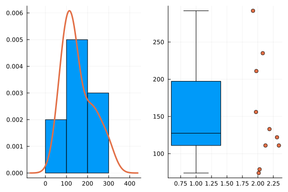
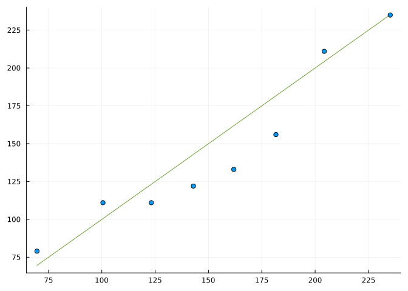

whale = [74, 122, 235, 111, 292, 111, 211, 133, 156, 79]10-element Vector{Int64}:
74
122
235
111
292
111
211
133
156
79Statistics involves the study of data. A data set can be a single value, or scalar, but more commonly is a collection of values. This chapter covers the basic containers used in Julia to store and manipulate data sets for a single variable in statistics. In addition it shows some basic summaries of a single variable.
Julia offers several containers for storing ordered data, such as in a data set \(x_1, x_2, \dots, x_n\).
We consider this data on the number of whale beachings in a certain area by year during a decade:
74 122 235 111 292 111 211 133 156 79As the data in a data set is typically of the same type (integer here, or character, number, …) and may be quite large a vector is a natural choice for storage in Julia.
Vectors are created using square brackets with entries separated by commas. Storing this in a vector and assigning to a variable, whale, is then done with:
whale = [74, 122, 235, 111, 292, 111, 211, 133, 156, 79]10-element Vector{Int64}:
74
122
235
111
292
111
211
133
156
79Without using commas, a matrix is created:
whale_matrix = [74 122 235 111 292 111 211 133 156 79]1×10 Matrix{Int64}:
74 122 235 111 292 111 211 133 156 79For purposes of printing only, we use the trailing |> permutedims below to to print a column vector, as a row vector in the following, as with:
whale |> permutedims1×10 Matrix{Int64}:
74 122 235 111 292 111 211 133 156 79This uses the chaining operation to call the permutedims function on the vector.
Internally a vector is a \(1\)-dimensional array, a matrix a \(2\) dimensional array. Julia has a general \(N\) dimensional array type that these are specializations of. For a matrix, one uses space to separate row elements and semicolons to separate rows. Vectors are useful for storing data; matrices can be used to store data, but are widely used to represent mathematical values, as they have an associated algebra that can compactly represent many operations; arrays are not used in our discussion.
As seen in the output above, Julia prints the size and element type of a vector. In this case, a vector of integers (Int64). The constructor ([]) will promote values to a common type, which may be Any, a catch all type.
Vectors have a length, found by length, which in this case is the number of data points, often labeled \(n\). More generally, arrays have a size:
length(whale), size(whale)(10, (10,))The size is returned as a tuple, in this case with just 1 element, as vectors are \(1\) dimensional.
The length function is a reduction, returning a summary of a vector. Similarly, sum will add the elements, returning a number. Here we see how to compute the mean:
sum(whale) / length(whale)152.4The mean function is not part of base Julia. It can be found in the Statistics package, which comes bundled with Julia, but we prefer to use the StatsBase package:
using StatsBase
mean(whale)152.4Julia uses missing to represent missing values. For example, data on the cost of a hip replacement at various hospitals was found from their websites and is given by:
10500, 45000, 74100, unavailable, 83500,
86000, 38200, unavailable, 44300, 12500,
55700, 43900, 71900, unavailable, 62000When the cost could not be identified, it was labeled “unavailable.” We replace the colloquial “unavailable” with the special value missing and enter the values into a vector:
hip_cost = [10500, 45000, 74100, missing, 83500, 86000, 38200, missing,
44300, 12500, 55700, 43900, 71900, missing, 62000]
hip_cost |> permutedims1×15 reshape(::Vector{Union{Missing, Int64}}, 1, 15) with eltype Union{Missing, Int64}:
10500 45000 74100 missing 83500 … 55700 43900 71900 missing 62000We highlight that the type of element in hip_cost is Union{Missing, Int64}, a type that allows an element to be either an integer or a missing element.
The missing value propagates through computations:
sum(hip_cost)missingIn particular, all of these basic combinations with missing yield missing, as they should – if data is not available, combinations based on that data are still not available:
1 + missing, 1 - missing, 1*missing, 1/missing, missing^2, missing == true(missing, missing, missing, missing, missing, missing)In Julia there is also nothing. The semantics are a bit different, and missing is the designed choice for data. (The nothing value is useful for general programming purposes.) For floating point values, there is also NaN, or not a number. This too ios often used, as a sentinel value, to indicate missingness, though missing is suggested. The something function is used to skip over its arguments until a non-nothing value is found.
To work with missing data, it can be removed or skipped over. The skipmissing function provides a wrapper around an object which when iterated over, will skip the missing values. For example:
sum(skipmissing(hip_cost))627600The sum function iterates over the values in the container it is passed to reduce them to a value, mean is similar and works with skipmissing in an identical manner:
mean(skipmissing(hip_cost))52300.0(Which is helpful, as length, used above to compute a mean, does not work with skipmissing.)
It may be natural to assign the year of measurement to the values in whale, but vectors, as defined in base Julia, do not allow names as an attribute. (There are external packages that allow this, e.g. NamedArrays, which arise in our discussion of contingency tables.) If names are important, Julia provides a named tuple type, which builds on the basic tuple type.
While vectors are collections of homogeneous values, tuples are collections of heterogeneous values. Tuples are constructed with commas, and typically parentheses to delimit the comma1:
whale = (74, 122, 235, 111, 292, 111, 211, 133, 156, 79)(74, 122, 235, 111, 292, 111, 211, 133, 156, 79)One-element tuples are distinguished by using a trailing command and parentheses:
a_lone_whale = (101,)(101,)For the many purposes, tuples can be exchanged for vectors, as both are iterable2:
sum(whale), mean(whale), length(whale)(1524, 152.4, 10)Unlike vectors, but like numbers, tuples can not be modified after construction. This allows tuples to be quite useful – and performant – for programming purposes.
Tuples can also have names. The basic construction uses “key=value” pairs:
test_scores = (Alice = 87, Bob = 72, Shirley = 99)(Alice = 87, Bob = 72, Shirley = 99)The names are not quoted, and are stored internally as a tuple of symbols. Extra effort is necessary to create names with spaces or number. In the following we show that var"..." is useful to create more complicated symbols3:
children = (var"X Æ A-Xii" = 1,
var"Vivian Jenna Wilson" = 2,
var"Exa Dark Sideræl" = 3)(var"X Æ A-Xii" = 1, var"Vivian Jenna Wilson" = 2, var"Exa Dark Sideræl" = 3)The above also shows that Unicode values are easily used within Julia in strings or as identifiers.
Named tuples can also have their “names” attached via parsing, through a syntax similar to keyword arguments of functions, as identifiers imply names:
a = [1,2]; b = [3,4]
(; a, b) # same as (a=a, b=b)(a = [1, 2], b = [3, 4])This gives several different ways to construct \(1\)-element named tuples, where something is done to disambiguate the use of enclosing parentheses:
(; a), (; a=a), (; :a => a), (a=a, )((a = [1, 2],), (a = [1, 2],), (a = [1, 2],), (a = [1, 2],))Named tuples can have their values accessed by name using getproperty, which has a . for convenient syntax:
test_scores.Alice87The generic function keys will return the names (“keys” are used to look up a value) and values will extract the values.
Named tuples being both named and heterogeneous are a natural container for collecting data on several different variables for a single case, as will be seen in the discussion on tabular data.
Abstractly, an associative array is a container for storing (key,value) pairs. Julia has the notation key => value for representing a pair. A named tuple is an immutables associative array where the keys are symbols. A dictionary is a more general mutable type with the keys being arbitrary (numbers, strings, symbols, …). There are various implementations, the Dict constructor the most commonly used. As with a named tuple, the keys are returned by keys, the values by values, and pairs by pairs.
The elements of a vector, like a data set, are indexed. For basic vectors Julia uses one-based indexing4. The whale data, as defined, has \(10\) elements, we can get the third, fourth, and sixth with:
whale = [74, 122, 235, 111, 292, 111, 211, 133, 156, 79]
whale[3], whale[4], whale[6](235, 111, 111)The above uses three function calls, and displays as a tuple does. (Since the commas produce a tuple.)
To retrieve these same values in a single call, we can pass a vector of indices:
whale[ [3,4,6] ]3-element Vector{Int64}:
235
111
111The end keyword refers to the last index of a collection. Similarly, begin refers to the first index inside the square brackets.
whale[end], whale[begin](79, 74)These values allow simple arithmetic. Here we see how to trim off the first and last through indexing5:
whale[begin+1:end-1] |> permutedims1×8 Matrix{Int64}:
122 235 111 292 111 211 133 156The colon, :, refers to all indices in a vector; whale[:] will return a copy of the data in whale.
The range 1:1 specifies the value 1, as does just 1, but for indexing the two are different:
whale[1], whale[1:1](74, [74])The idiom is indexing by a scalar – like 1 – can drop dimensions (the vector becomes a scalar), whereas indexing by a container – like 1:1 or, say, [1] – does not drop dimensions. The documentation for indexing of an array has: “If all the indices are scalars, then the result, X, is a single element from the array, A. Otherwise, X is an array with the same number of dimensions as the sum of the dimensionalities of all the indices.”
The extraction of values from a vector, as above, necessitates the allocation of memory to store the copy of the values. When the data set is large, or is accessed many times, these allocations may be avoided using a “view” of the data. Views create a lazy reference to the underlying data in the array. The view function takes the object as its first argument, and indices for its remaining arguments6:
view(whale, [3,4,6])3-element view(::Vector{Int64}, [3, 4, 6]) with eltype Int64:
235
111
111The end and begin keywords do not work with view7, though the lastindex and firstindex functions do:
view(whale, firstindex(whale)+1:lastindex(whale)-1) |> permutedims1×8 reshape(view(::Vector{Int64}, 2:9), 1, 8) with eltype Int64:
122 235 111 292 111 211 133 156The assignment
whale = [74, 122, 235, 111, 292, 111, 211, 133, 156, 79]
whale |> permutedims1×10 Matrix{Int64}:
74 122 235 111 292 111 211 133 156 79binds the name whale to the container holding the \(10\) numbers.
If we make another assignment, as in
whale_copy = whale
whale_copy |> permutedims1×10 Matrix{Int64}:
74 122 235 111 292 111 211 133 156 79the container is copied, but – unlike if we had used copy(whale) – the two variables point to the same container. When a vector is passed into a function, the function works with the container, not a copy.
The values in the container may be reassigned, which is done by using the indexing notation on the left-hand side of the equals sign:
whale[1] = 7575The value 75 is returned, as the right-hand side of an assignment is always the returned value, but we can see that whale was modified:
whale[1], whale_copy[1](75, 75)We also see that as whale_copy points to the same container, it too was modified.
When a vector is passed to a function, if there is no copy made (as opposed to a simple naming), then changes to the vector in the function will effect the original vector as the container used in the body of the function isn’t changed. Functions which modify an argument that is passed to them (conventionally the first one) are usually named with a trailing !.
Multiple values can be assigned at once. For example, if the data was mis-arranged chronologically, we might have:
whale[[1,2,3]] = [235, 74, 122]
whale |> permutedims1×10 Matrix{Int64}:
235 74 122 111 292 111 211 133 156 79The above modified the original container, so these changes would also be reflected in whale_copy.
Julia does not recycle by default, but broadcasted assignment (cf. ?.=) can produce a similar behavior. Broadcasted assignment expands the right hand side and then does in-place assignment. For example, if we wanted to use a sentinel value to indicate unknown data for the first 3 values, we might have:
whale[[1,2,3]] .= 999
whale |> permutedims1×10 Matrix{Int64}:
999 999 999 111 292 111 211 133 156 79Notice, without the dot an error will be thrown
whale[[4,5,6]] = 999 # errorsLoadError: ArgumentError: indexed assignment with a single value to possibly many locations is not supported; perhaps use broadcasting `.=` instead?The “recycling” above uses the left-hand side to identify the size needed. Broadcasted assignment also works with the entire collection. For example, the following command replaces the current data with the original data:
whale .= [74, 122, 235, 111, 292, 111, 211, 133, 156, 79]
whale |> permutedims1×10 Matrix{Int64}:
74 122 235 111 292 111 211 133 156 79But whale is not a new object – as it would be without that dot – but rather, these values are placed into the container whale already refers to – which also is the container whale_copy points at:
whale_copy |> permutedims1×10 Matrix{Int64}:
74 122 235 111 292 111 211 133 156 79This assignment avoids the needed allocation of more memory.
The use of [:] on the left-hand side also does in-place assignment8. So unlike whale = [...] which replaces the container whale points at, this command reuses the container:
whale[:] = [74, 122, 235, 111, 292, 111, 211, 133, 156, 79] |> permutedims1×10 Matrix{Int64}:
74 122 235 111 292 111 211 133 156 79| Index style | Explanation |
|---|---|
x[1] |
The first element of x. |
x[:] |
Copy of all elements of x. |
x[end] |
The last element of x. |
x[first] |
The first element of x. |
x[[2,3]] |
The second and third elements of x. |
typeof(x)[] |
\(0\)-length vector of same type as x. |
eltype(x) |
Element type of container x. |
x[1] .= 5 |
Assign a value of 5 to first element of x. |
x[[2,3]] .= 4 |
Broadcasted assignment to second and third elements |
x[[2,3]] = [4,5] |
Assign values to second and third elements of x. |
x[:] = [1, 2, 3] |
In-place assignment. Size and type of right-hand side must match left-hand side |
A vector has a length which can not be changed during assignment. Attempting to assign to an index beyond the size will result in a BoundsError. To extend the size of a vector we can use the following generic functions:
push!(v, x): extend the vector v pushing x to the last valuepushfirst!(v, x): extend the vector v pushing x to the first valueappend!(v, v1): append the entries in v1 to the end of vvcat(v, v1): vertically concatenate v and v1. (Unlike append! this returns a new vector, so the type of the output will be recomputed).The vector can also be shrunk. These generic functions for containers are useful:
pop!(v): remove last element from a vector; return elementpopfirst!(v): remove first element from a vector; return elementdeleteat!(v, i): remove ithe element from a vector; returns vectorempty!(v): remove all elements from a vectorAgain, the trailing ! in a function name is a convention to indicate to the user that the function will mutate its arguments, conventionally its first one. That is, a function like pop!(v) does two things: it returns the last element and also shortens the vector v that is passed in.
The assignment whale = [74, 122, 235, ...] assigns a container of a specific type to the variable whale. The eltype(whale) command will return this element type. Subsequent assignments to this container must contain values that can be promoted to that type, otherwise an error will be thrown.
For example, we can’t assign a fractional number of whales:
whale[1] = 74.5LoadError: InexactError: Int64(74.5)An InexactError is thrown because, whale is a vector of integers, and 74.5 can’t be automatically promoted to an integer (as 74.0 could be).
A similar thing happens if we attempt to assign missing to a value, as in whale[1] = missing. In this case, a MethodError is thrown, which comes from the attempt to “convert” missing into the underlying integer type.
The way to fix this is to create a new container that allows a wider type. For Float64 values that can be achieved in the cumbersome manner of converting all the values to the wider type:
whale = convert(Vector{Float64}, whale)
whale[1] = 74.574.5This assigns whale to a new container which accepts floating point values, and then reassigns the first one.
Though cumbersome, this is not typical usage, as the constructor used to create the data set will promote to a common type, so it would only matter when adjusting the initial values.
For the special case of assigning a missing value, the allowmissing function from the DataFrames package9 creates a vector with a type that allows – as well – missing values10. Again, re-assignment is necessary:
using DataFrames
whale = allowmissing(whale)
whale[1] = missingmissingAs seen, the functions length and sum are reductions, returning a single number from a vector of numbers. To compute a sample standard deviation, say, we follow the formula:
\[ s = \sqrt{\frac{\sum_i (x_i - \bar{x})^2 }{n-1}}. \]
To do so we would need to:
sum.Embarking on this with a simple attempt: whale - mean(whale) will fail.
The subtraction of a scalar value from a vector value is not defined, as Julia is not implicitly vectorized. Rather the user must be explicit. For this, the concept of broadcasting is useful. Broadcasting will expand the scalar to match the size of the vector and then use vector subtraction to find the result. Broadcasting is done simply by adding a “.” (the dot) to the function. For infix operations like - this is before the operator:
whale = [74, 122, 235, 111, 292, 111, 211, 133, 156, 79]
whale .- mean(whale) |> permutedims1×10 Matrix{Float64}:
-78.4 -30.4 82.6 -41.4 139.6 -41.4 58.6 -19.4 3.6 -73.4We also would need to square these values. This could also be done by broadcasting ^, as in:
(whale .- mean(whale)).^2 |> permutedims1×10 Matrix{Float64}:
6146.56 924.16 6822.76 1713.96 … 3433.96 376.36 12.96 5387.56To avoid having to use too many dots, it is typical to define a function for doing a scalar computation and broadcast that11. An example will wait, but to illustrate the syntax, we can broadcast the sqrt function using a “.” after the function name and before the opening parentheses:
sqrt.(whale) |> permutedims1×10 Matrix{Float64}:
8.60233 11.0454 15.3297 10.5357 … 14.5258 11.5326 12.49 8.88819Broadcasting works with functions of multiple arguments and multiple shapes.
The use of multiple shapes allows scalars and vectors to be broadcast over and is used in whale .- mean(whale). But vector and row vectors can also be broadcast over, So [1,2] .+ [3,4] does vector addition, [1,2] .+ [3 4] pads out the vector to a matrix, the row vector to a matrix, then adds:
(v=[1,2], rv=[3 4], va = [1,2] .+ [3,4], ma = [1, 2] .+ [3 4], ck=[1 1; 2 2] + [3 4; 3 4])(v = [1, 2], rv = [3 4], va = [4, 6], ma = [4 5; 5 6], ck = [4 5; 5 6])This behavior may not be desirable. Some objects broadcast as scalars, others as containers. But there may be times where broadcasting as a container may be incorrect. To force a value to broadcast like a scalar, the value can be wrapped in Ref. That is mean(whale) is the same as mean.(Ref(whale)) but mean.(whale) would broadcast mean over each element in whale. As mean for a single number is just that number, mean.(whale) would just be the same container.
An old taxonomy of levels of measurement include nominal, ordinal, interval, and ratio; where nominal values have no rank, ordinal values have a rank, but no meaning is assigned to the different between values, interval data has a meaning between differences but \(0\) is arbitrary, and ration has a meaningful zero, such as most numeric data. As data can easily be coded (explicitly or behind the scenes) with numbers, this keeps the different types distinct. However, for use with the computer, in particular Julia here, we see it makes more sense to emphasize different aspects of the data related to the underlying type.
Julia has numerous data types. Some are “abstract” types, such as Real or Integer, others are “concrete”, often indicating how the data is stored, such as Float64 or Int64, with the “64” indicating \(64\) bits of memory. In Julia, these data types can be used to direct method dispatch. For statistics a few common types are used to represent data. These are reviewed in the following.
The Julia parser readily identifies the following values of \(1\) and stores the value using a different type:
1, 1.0, 1//1, 1 + 0im, big(1), BigFloat(1)(1, 1.0, 1//1, 1 + 0im, 1, 1.0)Respectively, these represent integer, floating point, rational, complex, and two types of “big” numbers. Julia uses a promotion machinery when different types are mixed. For example, we have:
x = 1 + 1.0 + 1//1 + 1 + 0im + big(1) + BigFloat(1)6.0 + 0.0imThe type of x must be both complex and be able to store the underlying numbers, which may be “big” numbers:
typeof(x)Complex{BigFloat}The above illustrates that addition of an integer and a floating point yields a floating point, and adding to a complex number returns a complex number, etc.
Julia programmers try to make functions “type stable,” if possible, as this generally leads to more performant code once compiled. A consequence is addition of numbers, like 1 + 1.0 will always be a floating point value, even if in the case of these particular values an integer could be the answer. That is the output type of + here is determined by the input types, not the input values.
For data consisting of counts, integers are typically used. If storage is an issue (e.g., lots of data, but not a lot of different values), different forms of integers which use less data may be used.
For data on measurements, with a continuous nature, floating point values are the natural choice. Floating point can represent most integer values exactly, and fractional and irrational values either exactly or approximately. Rational numbers can represent fractional data exactly, though it should be expected that operations with rational values are less performant than for floating point values.
Complex values in Julia are based on an underlying data type holding the two numbers in a + bi.
There are different options available for the storage of categorical data.
The String type in Julia is the basic type for holding character data. Strings are created with matching single quotes or – for multiline strings – with matching triple quotes:
s = "The quick brown fox ..."
t = """
Four score and seven years ago
our fathers brought forth...
""""Four score and seven years ago\nour fathers brought forth...\n"The string type in Julia can hold Unicode data, such as non-ASCII letters and even emojis.
Double quotes are used to create a string. Triple quotes can be used to create multi-line strings. Single quotes are for Char types. A character represents a Unicode code point. Strings are iterable, and iteration yields back Char values. The collect function iterates over an object and returns the values. Here we see the Chars in a string:
s = "Zoë"
collect(s)3-element Vector{Char}:
'Z': ASCII/Unicode U+005A (category Lu: Letter, uppercase)
'o': ASCII/Unicode U+006F (category Ll: Letter, lowercase)
'ë': Unicode U+00EB (category Ll: Letter, lowercase)Strings are also indexable. When indexed by a single value, a Char type is returned, when indexed by a range of a values a string is returned. Be warned, indexing into non-ascii strings may error. Here is an example using a string from Julia’s manual:
j = "jμΛIα"
length(j), j[2], j[2:4] # 2:4 represent the value 2,3,4(5, 'μ', "μΛ")The value returned by j[2] is a character, whereas that returned by j[2:4] is a string12. However, attempting to extract j[3] will be an error.
Strings can be combined many different ways.
The * operation is used to combine strings or chars. The basic usage is straight forward:
"a" * "bee" * "see""abeesee"The ^ operation when used with an integer exponent will repeat the argument:13
"dot "^3"dot dot dot "More generally, join will combine an iterable of strings or characters. If a delimiter is specified, it will be inserted between values (with an option to indicate the last delimiter differently):
j = "jμΛIα"
join(collect(j), ","), join(collect(j), ", ", ", and ")("j,μ,Λ,I,α", "j, μ, Λ, I, and α")Julia makes string interpolation easy. Within a string, a value of a variable can be inserted using a dollar sign to reference the variable. This is more general, as computations can also be inserted. Below parentheses are used to delimit the interpolated command:
x = "Alice"
"$x knows that 2 + 2 is equal to $(2+2)""Alice knows that 2 + 2 is equal to 4"(To include a dollar sign in the string, it can be escape with a leading slash, “\”, or a raw string can be used, as in raw"$(2+2) is not evaluated".)
For formatted values, such as needed when printing floating point values, the built-in Printf package provides support. For more performant solutions, an IOBuffer can be useful14.
A common means to generate strings is from reading in delimited files, such as comma-separated files. These may produce strings with leading or trailing spaces. To strip these off, Julia offers strip, lstrip, and rstrip. The lstrip function strops the left side, rstrip the right side, and strip combines the two. An option to pass in other characters to strip besides spaces is available.
strip(" abc "), strip("...abc...", '.')("abc", "abc")Discussing data sets for different type of data adds no more complication as vectors in Julia are typed so a data set of character data might simply be stored as a vector of string data, such as:
job_title = ["Data Scientist", "Machine Learning Scientist", "Big Data Engineer"]3-element Vector{String}:
"Data Scientist"
"Machine Learning Scientist"
"Big Data Engineer"Julia as a language can be used to represent the language’s code as a data structure in the language. Symbols are needed to refer to the name, or identifier, of a variable as opposed to the values in the variable. Symbols, being part of the language, are used for other purposes, such as keys for a named tuple. The access pattern nt.a has been mentioned; this is a convenience for getfield(nt, :a), the symbol being used as a key. When data frames are introduced – essentially a collection of matched data vectors – symbols can be used to reference the individual variables.
The simple constructor for a symbol is :, as in :some_symbol. The Symbol constructor can also be used to create symbols with spaces, e.g., Symbol("some symbol"); the string macro var"..." is a convenience.
The string function (or String constructor) will create a string from a symbol.
While character data is useful for representing data that is unique to each case (like an individual’s address), there are advantages to using a different representation for data with many anticipated repeated values (like an individual’s state). Factors are a data structure that allow the user to see full labels, but internally, the computer only sees an efficient pool of possible levels or values. That is, a factor is essentially a mapping between a label and a corresponding key, with a possible ordering assigned to the labels.
Factors are not a built-in data type, but are provided by the CategoricalArrays package, which is loaded as other packages are:
using CategoricalArraysWe use an example from the package’s documentation:
We use an example based on coffee sizes at your neighborhood Starbucks. An order consisted of \(4\) drinks with these sizes, put into a categorical array:
x = categorical(["Grande", "Venti", "Tall", "Venti"], ordered=true)4-element CategoricalArray{String,1,UInt32}:
"Grande"
"Venti"
"Tall"
"Venti"This appears to be like a character vector, but the type is different. First, let’s peek to see how values are internally stored. The user-visible values are stored with:
x.poolCategoricalPool{String, UInt32}(["Grande", "Tall", "Venti"]) with ordered levelsInternally, the computer sees:
x.refs4-element Vector{UInt32}:
0x00000001
0x00000003
0x00000002
0x00000003The levels are the labels assigned to the internal values. We can see that the levels are internally kept as 32-bit integers, which in general is more space efficient than storing the labels. The command levelcode.(x) will show the values using the more readable 64-bit integers.
Working with levels is the key difference. First levels, may be ordered either by specifying ordered=true to the constructor or by calling ordered!(x, true). The example data has an odd order (call levels(x) to see), it coming from lexical sorting. So Grande is before Venti, despite the latter being 16 oz. and the former 20 oz (for hot drinks, 24oz for cold)15.
x[1] < x[2]trueTo reorder, we call the levels! function with the desired order:
levels!(x, ["Tall", "Venti", "Grande"])
x[1] > x[2]trueThe levels can be extended through assignment. For example, we might prefer the label “Tall, 12oz” to “Tall” and can readily do this:
x[3] = "Tall, 12oz""Tall, 12oz"After this command, there are 4 levels though only 3 used in the vector. To trim out extra levels, the droplevels! function can be used.
For multiple replacements, the replace function is useful and the levels are adjusted accordingly:
replace(x, "Grande" => "Grande, 20oz", "Venti" => "Venti, 16oz")4-element CategoricalArray{String,1,UInt32}:
"Grande, 20oz"
"Venti, 16oz"
"Tall, 12oz"
"Venti, 16oz"Categorical data can be combined, with vcat, say, and if ordered, as much as possible, an order will attempt to be matched.
The Boolean type in Julia has two values: true and false.
Boolean values have their own algebra. The short-circuiting && and || implement “and” and “or:”
false && false, true && false, false && true, true && true(false, false, false, true)false || false, true || false, false || true, true || true(false, true, true, true)These are called “short circuiting,” as the right hand side is only evaluated if it need be (as in true || false, the statement is known to be true after the left side of || is evaluated, so the right hand side is not evaluated). This is used frequently for error messages, as the error is not called when the expression is true. These operations may be broadcasted, so the above might have been illustrated by [true false] .&& [true, false]. The operation have left-to-right associativity, so it is common to see them in a sequence.
Many operations promote these values to 1 and 0. For example, true + false is 1, true * false is 0, and sum([true,false, true]) is 2; internally, the complex number \(i\) is internally a pair (false, true) indicating no real part and an imaginary part.
Boolean values are returned by the comparison operators <, <=, ==, ===, >=, and >. These have the expected meaning, save == is a test of equality (not =, which is used for assignment) and === is a test of whether two values are identical. (E.g. for a vector x we have x == copy(x) is true, but x === copy(x) is false, as the latter does not point to the exact same container.) The symbol ! is used for negation.
Boolean values can be used for indexing. Suppose inds is a vector of trues and falses with the same length as a vector x, then x[inds] will return those values from x where inds is true.
To create such Boolean vectors, the comparison operators are typically used combined with broadcasting. For example, the following redefines the whale dataset, then filters out only those values bigger than or equal to \(200\):
whale = [74, 122, 235, 111, 292, 111, 211, 133, 156, 79]
whale[ whale .>= 200]3-element Vector{Int64}:
235
292
211Or, this example – which shows the mathematically natural chaining of comparison operators – filters out only the values in \([100, 125)\):
whale[ 100 .<= whale .< 125]3-element Vector{Int64}:
122
111
111There are other helper functions to query the elements of a Boolean vector.
any(v) will return true if any of the elements of the Boolean vector v are true.all(v) will return true if all of the elements of the Boolean vector v are true.findfirst(v) will return the index of the first true value in the Boolean vector v or return nothing if none is found. A predicate function can be used, as in findfirst(f, v) which effectively calls findfirst on f applied to each element of v.findlast(v) will return the index of the last true value in the Boolean vector v or return nothing if none is found. A predicate function can be used, as in findlast(f, v) which effectively calls findlast on f applied to each element of v.findnext(v, i) will find the first true value after index i in the Boolean vector v or return nothing if none is found. A predicate function can be used, as in findnext(f, v, i) which effectively calls findnext on f applied to each element of v.In general, x in v will check if the element x is in the vector v. The Unicode operator ∈ can replace in.
Julia provides the built-in Dates module for working with date and time data. This module need not be installed, but is not loaded by default, so loading or importing it is needed to access the functionality.
using DatesConstructing a date is done with the Date constructor which expects a year, followed by an optional month and day. Date and time objects have the DateTime constructor. This example uses the vernal equinox, summer solstice, autumnal equinox, and winter solstice in the year 2022 for illustration:
ve, ss, ae, ws = Date(2022, 3, 20), Date(2022, 6, 21), Date(2022, 9, 22), Date(2022, 12, 21)(Date("2022-03-20"), Date("2022-06-21"), Date("2022-09-22"), Date("2022-12-21"))Dates can also be parsed from a string. The following uses the default format;16:
Date.(["2022-03-20", "2022-06-21", "2022-09-22", "2022-12-21"])4-element Vector{Date}:
2022-03-20
2022-06-21
2022-09-22
2022-12-21Date objects have the accessors year, month, and day:
year(ve), month(ve), day(ve)(2022, 3, 20)The objects allow for natural operations, such as comparisons and differences:
ve < ss < ae < ws, ae - ve, ve + Day(93)(true, Day(186), Date("2022-06-21"))The difference is returned in the number of days. The last command shows the duration of 93 days can be consteucted with Day and its value added to a Date object.
There are ways to query how a date falls within the calendar
dayofyear(ve), dayofweek(ve), dayname(ve), dayofweekofmonth(ve)(79, 7, "Sunday", 3)The last command returning that the vernal equinox in 2022 fell on the third Sunday of the month.
Structured data may not represent statistical data, but is useful nonetheless, e.g, for specifying the year of the counts in the whale data set.
For a vector of all ones or all zeros, the ones and zeros functions are useful. The command ones(n) will return a vector of n zeros using the default Float64 type. To specify a different type, such as Int64, the two-argument form, ones(T, n), is available. Similarly, zeros is used to create a vector of zeros. The singular one(), zero() (one one(T) and zero(T)) are useful for generic programming.
Arithmetic sequences, \(a, a+h, a+2h, \dots, b\) can be created with the colon operator a:h:b or a:b when h is 1. This operator returns a recipe for generating the sequence, it is lazy – it does not generate the sequence. The precedence is such that simple arithmetic operations do not need parentheses. That is a+1:b-1 represents the sequence \(a+1, a+2, \dots, b-1\). Arithmetic sequences are useful for indexing into a vector.
The colon operator for floating point values may or may not stop at b. Programming this is harder than it seems. The simple example of 1/10:1/10:3/10 should be \(1/10, 2/10, 3/10\), but it turns out that on the computer 1/10 + 2*1/10 is actually just larger than 3/10. See the value of 3/10 - (1/10 + 1/10 + 1/10) to investigate. However, the algorithm of : does produce the result with \(3\) values here.
1/10:1/10:3/10 |> collect3-element Vector{Float64}:
0.1
0.2
0.3The range function creates sequences. The common usage is range(start, stop, length). That is a:h:b specifies a step size, whereas the positional arguments of range specify the number of values between the starting and stopping values. Keyword arguments allow other combinations of start, stop, step, and length. The range returns a similar expression as the colon operator, it does not realize the entire range of values.
Scalar multiplication, scalar division, and addition of like-sized ranges are defined, as they return an arithmetic sequence.
For example, if whale holds beaching numbers for the years 2010 through 2019, we can get the odd years though the following:
oddyrs = 2011:2:2019
whale[oddyrs .- 2010 .+ 1] # 1-based offset is why we add 15-element Vector{Int64}:
122
111
111
133
79Julia has simple syntax for basic user-defined functions.
For simple functions, the syntax borrowed from math is useful. For example, here we define a function to find the mad defined by the median of the transformed data \(|x_i - M_x|\).
MAD(x) = median(abs.(x .- median(x)))MAD (generic function with 1 method)The function is named MAD (to distinguish it from the already defined mad function in StatsBase) and as written accepts a vector and returns a summary number:
MAD(whale)38.5For functions which are not one liners, a pair of function-end keywords will define a block. For example, the following computes the fifth standardized moment (skewness and kurtosis related to the 3rd and 4th). The first line is one way to document a function in Julia.
" Compute 5th standardized momemt: m_5 / m_2^(5/2)"
function fifth_sm(x)
xbar, n = mean(x), length(x)
m5 = sum((xi - xbar)^5 for xi in x) / n
m2 = sum((xi - xbar)^2 for xi in x) / n
m5 / m2^(5/2)
end
fifth_sm(whale)3.6325544657722215(The above uses a generator, created by the use of for and in to loop over the different values of x rather than broadcasting.)
The repetition above in m5 and m2 could be avoided if we made a function to compute the sample moments about the mean which accepted both the data and a value for the exponent:
sample_moment(x, n=2) = sum((xi - x)^n for xi in x) / length(x)
fifth_sm(x) = sample_moment(x, 5) / sample_moment(x)^(5/2)fifth_sm (generic function with 1 method)The variable n is in the second position and has a default value of 2 which is employed in the denominator of the above, where sample_moment is called with just a single argument.
There can be many positional arguments, only the last ones can have default values specified.
Functions can have a variable number of arguments. Here is a way to find the proportions of a set of numbers that is not stored in a container, but rather is passed to the function separated by commas:
proportion(xs...) = collect(xs) / sum(xs)proportion (generic function with 1 method)The splat syntax ... indicates a variable number of arguments in a function definition, and can be used to expand a list of arguments when used inside a function call. The use of collect, above, is needed above to generate a vector, as xs is passed to the body of the function as a tuple and tuples do not have division defined for them.
The mad function from StatsBase has signature mad(x; center=median(x), normalize=true). This shows the use of keyword arguments. These have a default value, which, as illustrated, can depend on the data passed in. To call a function without the default, the keyword is typed, as in:
mad(whale; center=mean(whale))74.13011092528009(We use a semicolon to separate positional from keyword arguments, as that is needed to define a keyword, but commas can be used to call a keyword argument. What is important is the keywords come last.)
Functions, as defined above, are methods of a generic function. That is, there can be more than one method for a given name. (There are over 200 methods for the generic function named + in base Julia – and packages can extend this even more.) To direct or dispatch a call to the appropriate method, Julia considers the number and types of its positional arguments. That is, like +, functions can be defined differently for integers and floating point values.
We might like our MAD function to be more graceful than to throw a MethodError if a vector of strings is passed to it. A vector of strings has type Vector{String} so we could make a method just for that type:17 `Julia makes adding methods easy, but the types that are used to extend the function shouldn’t be owned by other packages, as this is considered type-piracy. (Failing to do so may prompt a request for a letter of marque.)
MAD(x::Vector{String}) = print("Sorry, MAD is not defined for vectors of strings")
MAD(["one", "three", "four"])Sorry, MAD is not defined for vectors of strings(There are many different types that one might wish to exclude; there are many tricks to efficiently code for this. It is common to define a default method which errors and then a special case for the types that can be worked with. As types can be concrete, as the above, or abstract, it is possible to parameterize the type used for dispatch so that subtypes can be identified. For example, some operations return a SubString not a String. A vector of SubString will not match Vector{String} as even though both hold string data. The subtleties of parameterization are necessary to understand to write many special cases, but won’t be necessary in these notes.)
A higher order function is one that takes one or more functions as an argument. As example is the calling style of findfirst(predicate, x) where predicate is a function which returns a boolean value. Higher-order functions are widely used with data wrangling. For such uses it is convenient to be able to define an anonymous function. These do not create methods for a generic function, as they have no name (though they can be assigned a name). Anonymous functions are easily defined through the pattern: argument(s) -> body, where body, when multi-line, can be contained within begin/end blocks.
For example, to find the index of the first year that there were 200 or more whale beachings we have:
findfirst(x -> x >= 200, whale)3For the tasks of logical comparisons, there are partially-applied versions of the operators that are essentially defined like anonymous functions (cf. Base.Fix2). In particular, >=(200) can be used for the anonymous function x -> x >= 200. To illustrate, here we see the index of first year where there were 200 or more beachings and the index of the last year, using ! to negate a call (even though >=(200) would be identical):
findfirst(>=(200), whale), findlast(!<(200), whale)(3, 7)Another example would be to filter out those values less than 100. The filter(predicate, v) function does this:
filter(<(100), whale)2-element Vector{Int64}:
74
79As an illustration of a few other concepts, we consider alternatives to broadcasting that can prove useful. Consider the simplest case of broadcasting a function f over a single collection x.
For example here is broadcasting:
x = [1, 4, 9]
f(x) = sqrt(x)
f.(x)3-element Vector{Float64}:
1.0
2.0
3.0This use of broadcasting is also called the mapping of f over x. The map(f, x) function is defined:
map(f, x)3-element Vector{Float64}:
1.0
2.0
3.0Either broadcasting or map do the following: for each element of x apply the function f. This can be represented with the chaining operator, |>, adjusted to broadcast the values of x:
x .|> f3-element Vector{Float64}:
1.0
2.0
3.0The iteration over x can be made explicit with a for loop. The basic syntax would be:
out = Any[]
for xi in x
push!(out, f(xi))
end
out3-element Vector{Any}:
1.0
2.0
3.0For loops require extra effort for accumulation, which, in the above, required the selection of a container. We used Any[] to create a zero-length container that can hold any object and push values onto this. If would be preferable to have a concrete type, which in this case is just Float64[], but that requires some peeking to the output of f. This is to point out some background work performed by map and broadcasting that simplify other common tasks.
The for xi in x part of the for loop assigns xi to each iterate of x. There are some iterations that return more than one value at once, and it is common to see these destructured in the syntax. For example, enumerate is a helper function which takes an iterable object, like a vector, and iterates over both the index and the value:
for (i, xi) in enumerate(x)
print("element $i is $xi. ")
endelement 1 is 1. element 2 is 4. element 3 is 9. A comprehension is a good alternative to a for loop when accumulation is required and the computation for each iterate is simple to express. Comprehensions have the basic syntax [ex for x in xs] and additional syntax for multiple iterations. The expression ex can use the variable x; xs is some iterable, such as a vector. For example, we might have this alternative to f.(x)
[xi - mean(x) for xi in x]3-element Vector{Float64}:
-3.666666666666667
-0.666666666666667
4.333333333333333Comprehensions use generators, which can also be used for many other functions, such as sum, which was previously illustrated. This form has the advantage of not needing to allocate temporary space to compute. For example sum([xi for xi in x]) would have to find space for the vector created by the comprehension, but the similar – and easier to type – sum(xi for xi in x) would not.
In this example, we sum the squared differences, passing an optional function to sum:
f(x) = x^2
sum(f, xi - mean(whale) for xi in whale)46020.399999999994| Iterator | Description |
|---|---|
eachindex |
iterate over each index |
values |
iterate over values in a container |
enumerate |
iterate over index and value |
keys |
iterate over keys for the container |
pairs |
iterate over (key,value) pairs in the container |
zip |
iterate over multiple iterators; the value is a tuple with an element from each |
eachcol |
for tabular data, iterate over the columns |
eachrow |
for tabular data, iterate over the rows |
The StatsBase package provides numerous functions to compute numeric summaries of a univariate data set.
For measures of center we have the mean (average), median (middle value), and mode (most common value):
mean(whale), median(whale), mode(whale), mean(trim(whale, prop=0.2))(152.4, 127.5, 111, 140.66666666666666)The trimmed mean is computed by composing mean with the trim function which returns a generator producing the trimmed values (with proportion to trim specified to prop).
For measures of spread we have the standard deviation, the median absolute deviation, and the inter-quartile range (\(Q_3 - Q_1\)):
std(whale), mad(whale), iqr(whale)(71.5078861229849, 57.08018541246567, 86.25)The quantile(x, p) function returns measures of position. Keywords alpha and beta can be used to adjust the algorithm employed. The 0 quantile is the minimum, the 1 quantile is the maximum, and 0.5 the median. The p may be an iterable. Here we see that type of p is used to compute the value output:
quantile(whale, (0, 1//2, 1.0))(74, 255//2, 292.0)The quantile function is used internally by StatsBase: the iqr is defined by the difference of quantile(x, [1/4, 3/4]); the summarystats function returns a summary of a data set, with the 5-number summary of the quantiles (p=0:1/4:1), the mean, the length, and the number of missing data values.
A measure of position gives a sense of how large a value is relative to the data set. Knowing a value is the 20th percentile, say, says it is larger than 20 percent of the data and smaller than 80 percent. The percent of data less or equal a value can be computed by sum(data .<= value) or sum(x <= value for x in data).
The \(z\)-score is a different measure of position. The \(z\) score is computed by (value - mean(data))/std(data) or for all values at once with:
zs = (whale .- mean(whale)) / std(whale)10-element Vector{Float64}:
-1.0963825705204249
-0.4251279355079199
1.155117351084019
-0.5789571226982856
1.9522322301613686
-0.5789571226982856
0.8194900335777664
-0.2712987483175542
0.05034409762593779
-1.0264602127066222A rule of thumb, based on a certain bell-shaped distribution, is that values larger than 3 in absolute value are unusual, none of which are seen in this data. The \(z\) score measures the difference from the mean on a scale of standard deviations. It is typical form of standardization and is supported directly through either:
zs1 = zscore(whale)
zs2 = standardize(ZScoreTransform, Float64.(whale))
zs == zs1 == zs2trueThere are two main measures: those based on differences and those based on position.
The mean is defined by
\[ \bar{x} = \frac{1}{n} \sum_{i=1}^n x_i. \]
A property of the mean is when we center by the mean, i.e. take the transformation \(y_i = x_i - \bar{x}\), then the mean of the \(y_i\) is just \(0\). Put another way, the mean is the point where the differences to the left and right of the mean even out when added.
The standard deviation, as a sense of scale, has the property that if we center and then scale by the standard deviation, the center will be \(0\) and the scale will be \(1\). That is, the \(z\)-scores have mean \(0\) (as we’ve centered) and standard deviation \(1\) (as we’ve scaled) – the \(z\) scores speak to the “shape” or distribution of values of a data set.
These measures are sensitive – or not resistant – to one or more outlying values. For example, the average wealth of people in a bar changes dramatically if someone like a pre-crash Elon Musk walks in. The standard deviation is similar. So measures based on position are better when data is skewed, especially if heavily skewed. For these, the median and IQR are not impacted greatly by 1 large value. That is they are resistant to outliers. The extreme values (the minimum and maximum) are less so, so the range of the data is a poor measure of spread, the range of the middle quartiles (the IQR) a resistant measure of spread.
| Measure | Type | Description |
|---|---|---|
mean |
center | Average value |
median |
center | Middle value |
mean ∘ trim |
center | Trimmed mean |
var |
spread | “Average” squared distance from mean |
std |
spread | The square of the variance |
mad |
spread | The median absolute deviation from center |
IQR |
spread | Range of middle half of data |
extrema |
spread | Smallest and largest values |
quantile |
position | Value where data would be split for give proportion |
summarystats |
position | The quartiles and extrema |
zscore |
position | Standardizing transformation |
The \(5\)-number summary gives some insight into the shape of a distribution, in that it can show skewness. The skewness function numerically quantifies this:
skewness(whale)0.7785957149991207Symmetric data has \(0\) skew.
The kurtosis function numerically summarizes if a distribution has long or short tails compared to a benchmark distribution, the normal:
kurtosis(whale)-0.5833928499406711However, the shape of a distribution is best seen graphically.
A stem or stem-and-leaf plot is useful summary of a data set that can be computed easily by hand for modest sized data. Basically numbers are coded in terms of a stem and a leaf. The stems are not repeated, so the data can be more compactly displayed. The data is organized so that the extrema, the median, and the shape of the data can be quickly gleaned.
The basic stem plot is not part of the StatsBase package. This one, below, is modified from a RosettaCode submission. It is simplified by assuming non-negative data.
using Printf
function stemleaf(a::Array{T,1}, leafsize=1) where {T<:Real}
ls = 10^floor(Int, log10(leafsize))
aa = floor.(Int, sort(a)/ls)
out = divrem.(aa, 10)
stem, leaf = first.(out), last.(out)
io = IOBuffer()
for i in stem[1]:stem[end]
i != 0 || println(io, "")
print(io, (@sprintf "%10d | " i))
println(io, join(map(string, leaf[stem .== i]), ""))
end
println(io, " Leaf Unit = " * string(convert(T, ls)))
String(take!(io))
endstemleaf (generic function with 2 methods)For the whale data, which is spread out over a wide range, we use a leaf size of 10:
stemleaf(whale, 10) |> print
0 | 77
1 | 11235
2 | 139
Leaf Unit = 10We can identify 0|7 which is 0*100 + 70 or 70 as the “smallest” value. The actual smallest value is \(74\), but the data is rounded for this graphic so that just two digits (the stem and leaf) can represent all the values. Similarly 290 is identified as the largest values (which is actually 292).
For graphical summaries of data, we will utilize the StatsPlots package, which adds to the Plots package recipes for many statistical graphics.
using StatsPlots
p1 = histogram(whale; normalize=true, legend=false)
density!(p1,whale, linewidth=3)
p2 = boxplot(whale, legend=false)
dotplot!(p2, whale);
whale data, which show a slight skew.The figures are shown in Figure 2.1. The histogram has normalize=true passed to it to have total area of 1 allowing a density curve to be superimposed. The Plots packages uses the ! convention to indicate that density! should use the current figure to layer on a density plot. The boxplot and dotplot are plotted side by side, to show how the boxplot summarizes the data through the quartiles, with the data split into quarters by the box and its middle line.
A quantile-normal plot is a graphic to assess if a data set comes from a normal distribution, a reference bell shaped distribution. The basic graphic is a scatter plot of a quantile of the data set with a corresponding quantile of the reference distribution. If the data set has a roughly bell-shaped distribution with “typical” tails, then the dots will mostly fall on a straight line; if the data set is skewed one edge will deviate from the line; if the data set is symmetric, but has long tails these will shows a deviations in both edges of the line. The qqnorm function produces Figure 2.2:
qqnorm(whale; legend=false)
whale dataThe parentheses for constructing tuples with 2 or more elements are technically optional, a fact that is useful for bundling different outputs into one↩︎
The output of the following command is displayed as a tuple, as the commas used create the tuple, even if not enclosed in parentheses.↩︎
The var implementation is via a string macro, and is documented through @var_str.↩︎
In Julia there are options to have offsets for indexing, e.g. OffsetArrays that allow for other access patterns, such as would be useful for zero-based indexing.↩︎
This example uses the colon operator to produce a range of values between it two arguments with increment of \(1\).↩︎
Arrays can be \(n\) dimensional, so there may be \(1\) or more index to specify↩︎
Though : does, as it is a function, not a keywoard.↩︎
The : copies on the right-hand side, but does in-place assignment on the left-hand side↩︎
With data frames, the allowmissing! function is used, as well.↩︎
The allowmissing function creates a union type with Missing in addition to the original data type. It some printouts, a ? is appended to the type name to indicate this addition.↩︎
Also the @. macro can automatically broadcast all operations.↩︎
The colon operator a:b returns an iterator to produce “a, a+1, …, b”.↩︎
The expression s^i just calls repeat(s, i), for these types.↩︎
These are illustrated in the stemplot function defined later.↩︎
There are also Demi (3oz), short (8oz), and Trenta (31oz).↩︎
Different date formats are possible, see ?DateFormat for details.↩︎
To extend the mad function from StatsBase requires the extra step of importing that function or qualifying it with its module, as in StatsBase.mad(...) = ....↩︎